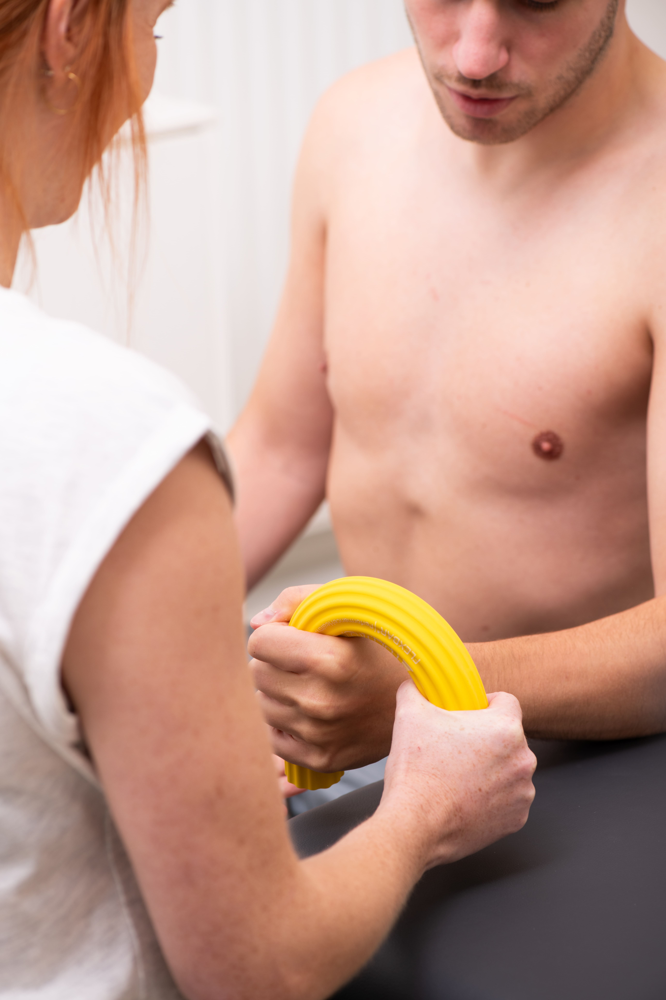

Rééducation de la main
Rééducation de la main
La main, la partie la plus utilisée de notre corps dans la vie quotidienne, mérite des soins spécialisés en cas de blessure, d'opération ou de problème. La rééducation de la main se concentre sur la restauration de la fonction de la main et du poignet, la réduction de la douleur, l'amélioration de la mobilité, de la force et de l'endurance. Cela optimise la fonction de la main et aide le patient à reprendre ses activités quotidiennes.
Le traitement comprend des techniques sur mesure telles que la thérapie par l'exercice, la thérapie manuelle, la mobilisation, les étirements, le renforcement musculaire et les exercices de sensibilisation, adaptés à la pathologie ou à la blessure spécifique du patient.
Pour quelle rééducation des mains pouvez-vous venir chez Manus ?
- Cyste au poignet
- Fracture du poignet ou fracture du radius dorsal
- Syndrome de De Quervain
- Arthrose du pouce
- Contracture de Dupuytren
- Doigt à ressort
- Syndrome du canal carpien
